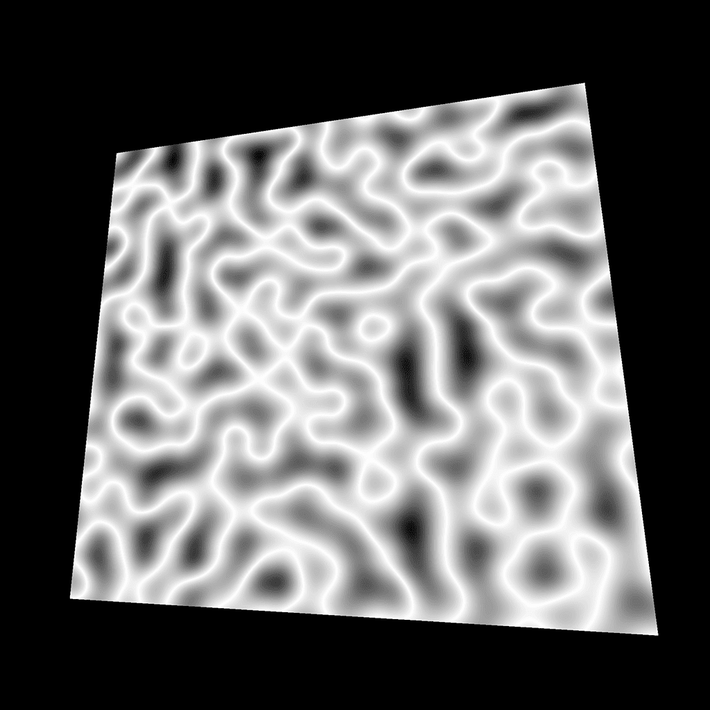

Introduction
Often, while creating shaders, we need to draw specific patterns like stars, circles, light lenses, waves, etc.
It can help to effectively see those pattern on a geometry or it can be to move the vertices just like we did with the flag in the previous lesson.
We could use textures but drawing the shape gives us more control; we can animate the shape parameters, and there is no texture to load.
It's much more complicated than drawing with other APIs like canvas because the code is the same for every fragment, and all we have are coordinates and our mathematical skills.
Yes, there will be some maths in this lesson. It's one of the most frustrating parts for some people but fear not; even if you are doing poorly with maths, you'll find a solution.
In this lesson, we will try to draw various patterns on a plane. We will start very thoroughly, and things will get more challenging with time. It's the perfect occasion to discover classic techniques and use built-in functions.
For each pattern, we first study the result; then, we try to reproduce it. If you want to get better at this, pause the lesson on each pattern and try to do it yourself. Even if you fail, the solution will make more sense if you tried on you own.
Setup
Currently, we only have one plane on the scene with a ShaderMaterial as a PlaneGeometry. As a reminder, ShaderMaterial is like RawShaderMaterial, with some code prepended to the shaders like importing the matrices, importing some attributes, or setting the precision.
Send the UV coordinates to the fragment
Because we will draw the plane patterns, most of our code will be in the fragment shader. But first, we need to send the UV coordinates from the vertex shader to that fragment shader.
To retrieve the uv attribute in the vertex shader, we should have written something like this:
But because we are using a ShaderMaterial, this code is already prepended to the vertex shader.
To send this value from the vertex shader to the fragment shader, we need a varying. We are going to call it vUv and assign it with the uv:
In the fragment shader, we can retrieve this vUv varying with the same declaration:
We now have access to the uv coordinates in our fragment shader as vUv. The values go from 0, 0 on the bottom-left corner to 1, 1 on the top-right corner.
Pattern 1
This lovely color pattern is the easiest one to get. We just need to use the vUv in the gl_FragColor with the blue value being 1.0:
Pattern 2
This is exactly the same pattern but with the blue value being 0.0:
Pattern 3
Things get a little more interesting here. To get this gradient, we only use the x property of the vUv, but in all first three values of gl_FragColor:
From now, we are going to draw black and white patterns like this. Instead of sending the value on r, g, and b separately, we can create a float variable named strength:
We will now focus on the strength variable and try to draw the following patterns.
Instead of replacing your previous patterns, you can comment so you can get back to them later.
Pattern 4
This pattern is exactly the same but on the y axis:
Pattern 5
This pattern is exactly the same but we invert the value with 1.0 - ...:
Pattern 6
To squeeze the gradient like this, we simply multiply the value. The strength will jump quickly to 1, but we can't show a color brighter than white so the rest of the gradient stays white:
Pattern 7
Now we are talking. To repeat the gradient, we use a modulo. The modulo operation finds the remainder after a division of the first number by the second one.
0.5modulo1.0will be0.50.8modulo1.0will be0.81.2module1.0will be0.21.7modulo1.0will be0.72.0modulo1.0will be0.02.4modulo1.0will be0.4
It's like having the first number going back to 0 once it reaches the second number.
In many languages, we can use the % to apply the modulo but in GLSL we have to use the mod(...) function:
Pattern 8
This pattern seems based on the previous one but instead of a gradient, we have 0.0 or 1.0.
We could have done this with an if statement —because conditions do work in GLSL— but I recommend avoiding conditions for performance reasons.
We can use the step(...) function. We provide an edge value as the first parameter and a number as the second parameter. If the number value is lower than the edge, we get 0.0. If it's higher than the edge, we get 1.0:
As you can see, we used the step(...) function in another line while re-assigning strength. That has no performance drawback. You'll see many shader developers write huge code lines with as few variables as possible and almost no comment, but this is just because they know what they are doing.
Do as you want, especially if you are a beginner.
Pattern 9
This pattern is the same as the previous one, but with a higher edge value for the step(...):
Pattern 10
This pattern is the same as the previous one but we used the x axis of vUv instead of the y axis:
Pattern 11
We can also combine them. Here, we have to add the result of the x axis to the result on the y axis:
Pattern 12
This pattern uses the same principle but with multiplication. We can only see their intersections:
Pattern 13
This pattern is the same as before, but we tweaked the step edge on the x axis:
Pattern 14
This pattern is a combination of the previous patterns. We create the bars on the x axis and add the bars of the y axis:
Like in any languages, when the code gets unbearable like this, it's a good idea to refactor a little:
Pattern 15

This pattern is the same as before, but we apply a small offset on the x and y axes of the bars:
That is the kind of situation where beginners like us will stick to tweaking the values until it works. There is no problem with that, and the solution will probably make sense once you find it.
Pattern 16
Let's go in another direction with this one. To get this result, we first need to offset the vUv.x so it goes from -0.5 to 0.5. Then we need the value to be always positive so it goes from 0.5 to 0.0 to 0.5 again. For this, we can use the abs(...) function:
Pattern 17
This pattern looks like a combination of the previous one combines with a variation on the y axis. It's no ordinary combination. What you can see here is the minimum value between the pattern on the x axis and the pattern on the y axis. To do that, we use the min(...) function:
Pattern 18
Same thing as above, but with the max(...) function:
Pattern 19
For this pattern, we simply applied a step(...) on the previous value:
Pattern 20
This pattern is the multiplication of one square with another but smaller and inverted.
Pattern 21
For this pattern, we multiply vUv.x by 10.0, round it to its lower integer with the floor(...) function, and divide it by 10.0 to get a value between 0.0, and 1.0:
Pattern 22
As before, we can combine the different axes by multiplying them:
Pattern 23
Getting this pattern is complicated because there is no native random function in GLSL. The trick is to get a value so unpredictable that it looks random.
One popular way to get that kind of value is using the following function:
We provide a vec2 to this function, and we get a pseudo random value.
If you want to learn more about this function, here's a link from The Book of Shaders: https://thebookofshaders.com/10/
We can add this function outside of the main function, and use it with the vUv:
Be careful with this random function. Using the wrong values can result in noticeable shapes in the randomness.
Pattern 24
This pattern is a combination of the two previous ones. First, we create a new vec2 coordinates named gridUv with rounded values:
Then, we use these coordinates with the random function:
Pattern 25
This pattern stems from the previous one. To get this tilt effect, we must add the vUv.x to the vUv.y when creating the gridUv:
Pattern 26

On this pattern, the further from the bottom left corner, the brighter the strength is.
That is in fact the length of the vUv. vUv value is equal to 0.0, 0.0 so the length is 0.0 on the bottom-left corner and the further we go away from that corner, the higher its length is.
We can get the length of a vector (vec2, vec3 or vec4) with the length(...) function:
Pattern 27
Instead, we will get the distance between vUv and the center of our plane. Because our plane UV goes from 0.0, 0.0 to 1.0, 1.0, the center is 0.5, 0.5. We are going to create a vec2 corresponding to the center and get the distance from the vUv with the distance(...) function:
When creating a vector with only one value, this value will be passed on every properties —x and y in our case.
Be aware that we could also have offset the vUv and use the length(...) function.
Pattern 28
For this pattern, we subtract the previous value to 1.0:
Pattern 29
This pattern is handy when creating a light lens effect. To get this result, we start from a small value and divide it by the previously calculated distance:
Pattern 30
This is the same pattern but with the UV squeezed and moved on the y axis only:
Pattern 31
And this is the same pattern multiplied with the same formula, but this second one is based on the x axis:
Pattern 32

Getting this pattern is rather laborious. We need to rotate the vUv coordinates in the center. Doing a 2D rotation is a mix of cos(...) and sin(...) that we won't cover here. It's also a good opportunity to use functions. Add this following function before the main function:
Then, we can use it to create a new set of UV that we will call rotatedUV. The problem is that we want to rotate exactly one-eighth of a full circle. Regrettably, we don't have access to π (pi) in GLSL.
Instead, we can create a variable that contains an approximation to π:
Because this variable will never change, we can save it as a define at the start of the code:
Defines are cheaper than variables but cannot be changed. It is good practice to right defines in UPPERCASE to distinguish them from other variables.
Then we can use that PI value for the second parameter of the rotate(...) function (the angle):
And finally, we replace our vUv by this new rotatedUV:
Pattern 33
To draw that disc, we use the distance(...) function with the step(...) function and apply an offset to control the disc radius:
We could also have change the first parameter of step(...) —named edge— to control the radius.
Pattern 34
This pattern is very close to the previous one, but we use the abs(...) function to keep a positive value:
Pattern 35
We can combine the two previous ones to get a circle:
Pattern 36
And we can invert it with 1.0 - ...:
Pattern 37
This pattern is based on the previous one, but with a wave-like distortion. To get this result, we create a new UV variable that we can call wavedUv, and we add a sin(...) based on the x axis to the y value:
Then, we use that wavedUv instead of the vUv:
Pattern 38
For this pattern, we also apply the wave distortion to the x axis:
Pattern 39
And we just have to increase the sin(...) frequency to end up with a psychedelic effect:
Imagine animating that.
Pattern 40
This pattern is actually the angle of vUv. To get an angle from 2D coordinates, we can use atan(...):
Pattern 41
This pattern is the same but with a 0.5 offset on the vUv, to create an angle around the center:
Pattern 42
One more time, this pattern is the same, but with the angle going from 0.0 to 1.0. Currently, atan(...) returns a value between -π and +π. First, we can divide by PI * 2:
We get a value that goes from -0.5 to 0.5. We just have to add 0.5:
Having a proper angle is a positive way to play with circular shapes. We will regroup the angle operations into one line to read it more easily:
Pattern 43
This pattern is based on the same technique we used at the beginning with modulo, but this time, with angle:
Pattern 44
And this one is using sin(...):
Pattern 45
We can use the previous value to define the circle we drew earlier's radius:
Pattern 46
This pattern is called perlin noise. You probably already have heard of it, and, if not, you probably saw it without knowing it. The perlin noise is instrumental in recreating nature shapes like clouds, water, fire, terrain elevation but it can also be used to animate the grass or snow moving in the wind.
There are many perlin noise algorithms with different results, different dimensions (2D, 3D, and even 4D), some that repeat themselves, others more performant, etc.
Here is a Github gist that lists some of the most popular perlin noises we can find for GLSL: https://gist.github.com/patriciogonzalezvivo/670c22f3966e662d2f83
Be careful though; some codes might not work immediately as we will see. We will now test the first Classic Perlin Noise by Stefan Gustavson, which is a 2D noise —we provide a vec2 and we get a float in return. Only copy the code to your shader, but don't use it yet:
Unluckily, this code seems to break our shader, and it's because a function named permute is missing. Here it is and you can add it right before the fade function:
We now have access to a cnoise function, and we can use the vUv on it:
It's a rough result, but still, we have something. To see more of the pattern like in the preview, multiply the vUv by 10.0:
Pattern 47
This pattern uses the same noise, but with a step on it:
Very useful if at some point, you feel like creating a cow.
Pattern 48

For this pattern, we used an abs(...) on the value, and subtract the result to 1.0:
You can work with it to create lightnings, reflection under water or plasma energy things.
Pattern 49
For this pattern, we applied a sin(...) on the noise:
Pattern 50
And for this final one, we combined the sin(...) and the step(...):
Easy peasy, black and white lemon squeezy.
Test it with colors
It was fun, but these black and white colors are getting dull. One cool color we had at the start was when we used the vUv directly in the gl_FragColor:
What we can do now is use that gradient color instead of the white.
Mix colors
To do this, we are going to use the mix(...) function. This function needs 3 arguments:
- A first input that can be a
float, avec2, avec3, or avec4. - A second input, which should be of the same type.
- A third value that has to be a
float. It will decide to take more of the first input or more of the second one. If we use0.0, the returned value will be the first input. If we use1.0, the return value will be the second one. If we use0.5, the value will be a mix between the two inputs. You can also go below0.0or above1.0and the values will be extrapolated.
Let's create a first color:
Let's form a second color:
We obtain the mix between the two colors according to the strength:
And we use that mix in the gl_FragColor without changing the alpha:
Have fun testing this with all the previous patterns.
Fix the strength
If you test patterns such as #11, #14, and #15 with this UV gradient, you'll see some strange behaviors at the intersections.
It looks like the intersections are too bright, and that's what they are exactly. It's because the strength value that we use in the mix(...) is higher than 1.0 and the output gets extrapolated —meaning it goes beyond the second value.
To limit this value, we can use the clamp(...) function on the strength. This function will simply set a low and a high limits to a value:
Go further
There are many other potential patterns and many additional functions. The idea of this lesson was to give you strings to your bow for your future projects and to practice GLSL in a trivial context.
One useful thing we didn't try would be to put those shapes into functions. We could have created a getCircle function, a getSquare function, etc. with correct parameters to reuse them easily.
Keep practicing, don't be afraid to create new shapes, experiment, and look for help if you need it.
Also, try to add some uniforms to animate the values or add some tweaks to the debug panel.